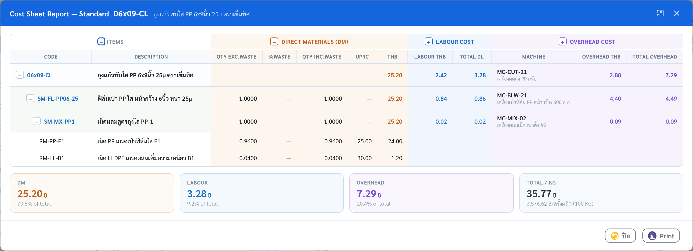

แคมเปญ “ชั่วโมงที่ไม่ขาดทุน”
ทุกชั่วโมงการผลิตควรสร้างคุณค่า
ไม่ใช่ต้นทุนที่มองไม่เห็น
Beside — ระบบบริหารโรงงานครบวงจร ขาย · ซื้อ · ผลิต · คลัง · ต้นทุน
พร้อมระบบบาร์โค้ดสำหรับหน้างาน — บันทึกข้อมูล ณ จุดปฏิบัติงาน และมองเห็นภาพรวมได้ทันทีทั้งองค์กร
จอโปรแกรม 77 จอ + รายงาน 28 แบบ
Beside Mobile 56 จอหน้างาน
ภาษาไทยทั้งระบบ
ออกแบบแบบฟอร์มเองได้ทั้งใบ
ชุดนำเสนอสำหรับลูกค้า · สิงหาคม 2026BESIDE · TECHLEGEND
FLOW 1 · SALES
Sales Flow
1
ใบเสนอราคา
Sales Quotation

เปิดราคาให้ลูกค้า พร้อมเงื่อนไข ส่วนลด และ VAT คำนวณให้ครบ
2
ใบสั่งขาย
Sales Order

ดึงจากใบเสนอราคาได้ทั้งใบ — จองของในคลังและส่งเข้าคิวผลิตต่อได้
3
ใบส่งของ
Delivery

ตัด Stock ตาม Lot จริงที่ขึ้นรถ — ยิงบาร์โค้ดตรวจตอนโหลดได้ด้วย Beside Mobile
4
ใบกำกับภาษีขาย
AR Invoice

รวบใบส่งของหลายใบออกใบกำกับภาษีรอบเดียว พร้อมภาษีขายครบถ้วน
+Back Order Report ตามของค้างส่งให้อัตโนมัติ — รู้ทันทีว่าลูกค้ารายไหนรอของอะไร ค้างมากี่วัน · Sales Forecast Dashboard เทียบแผนขายกับยอดจริงรายเดือน
BESIDE
FLOW 2 · PURCHASE
Purchase Flow
1
ใบขอซื้อ
Purchase Requisition

หน้างานขอซื้อพร้อมแนบเหตุผล — ส่งเข้าสายอนุมัติตามวงเงิน
2
ใบสั่งซื้อ
Purchase Order

รวมใบขอซื้อหลายใบเป็น PO เดียว เทียบราคา Supplier และประวัติซื้อได้ในจอ
3
รับสินค้า
Goods Receipt PO

รับเข้าคลังตาม Lot — หรือยิงบาร์โค้ดรับหน้าท่าด้วย Beside Mobile จบใน 4 จอ
4
ตั้งหนี้ซื้อ
AP Invoice

จับคู่ใบรับของกับใบแจ้งหนี้ ภาษีซื้อครบ — ยอดไม่ตรงเห็นตั้งแต่ก่อนบันทึก
+ระบบเตือน ราคาซื้อจริงที่ขยับจากราคามาตรฐาน อัตโนมัติ — เป็นข้อมูลตั้งต้นของจอ Cost Simulator ในหมวดวิเคราะห์
BESIDE
DOCUMENT FLOW · จอจริงในระบบ
Document Relationship Map

BESIDE
FLOW 4 · COSTING ENGINE
Standard Cost Book
1
เล่มต้นทุนมาตรฐาน
DM · DL · OH รายสินค้า แยกตามเวอร์ชันเล่ม

2
Cost Sheet Report
กดไอคอนรายงานที่คอลัมน์ Cost Sheet

1
เล่มต้นทุนแยกเวอร์ชัน — ลองก่อน ค่อยประกาศใช้
สร้างเล่มทดลองกี่เล่มก็ได้ — ทดลองสมมติฐานเต็มที่ ไม่กระทบการผลิตจริงจนกว่าจะประกาศใช้
2
แยก DM · DL · OH ทุกสินค้า
รู้ว่าต้นทุนก้อนไหนมาจากวัตถุดิบ ค่าแรง หรือโสหุ้ย — จุดตั้งต้นของการลดต้นทุนที่ถูกที่
3
กดดูที่มาได้ถึงระดับรายการ
เปิด Cost Sheet ของสินค้าตัวไหนก็ได้ — เห็นวัตถุดิบทีละบรรทัด เครื่องจักรที่ใช้ ชั่วโมงและเรต จนถึงต้นทุนต่อหน่วย
BESIDE
FLOW 4 · COSTING ENGINE
Actual Cost & Margin
1
Job Cost Sheet
ต้นทุนจริงรายใบสั่งผลิต · แผน vs จริง

2
Cost Comparison
กำไรรายสินค้า เทียบต้นทุนจริงกับราคาขาย

1
Job Cost Sheet สรุปต้นทุนจริงรายใบสั่งผลิต
เปรียบเทียบต้นทุนตามแผนกับต้นทุนจริงของแต่ละงาน เห็นรายการที่เกินแผนได้ก่อนปิดงวด
2
Cost Comparison ชี้สินค้าที่มีความเสี่ยงด้านกำไร
แสดงกำไรรายสินค้าพร้อมสถานะ กำไรดี / กำไรต่ำ / ขาดทุน เพื่อช่วยตัดสินใจด้านราคาจากข้อมูลจริง
BESIDE
PRODUCTION · DASHBOARD
Production Dashboard

BESIDE
PLANNING · MPS
Master Production Schedule

BESIDE
PLANNING · MRP
Material Requirements Planning
1
ผลรัน MRP — รายการวัตถุดิบ
กด RUN จริงบนระบบ · 54 รายการ

คำนวณจากสูตร BOM Stock คงเหลือ และแผนผลิต — กางรายละเอียดรายช่วงเวลาได้ทุกรายการ
2
มุมมอง Heatmap
จุดขาด Stock เห็นเป็นสีทันที

วัตถุดิบ × ช่วงเวลา — ช่องสีเข้ม = ขาดหนัก มองทีเดียวรู้ว่าต้องเร่งเปิด PO ตัวไหนก่อน
BESIDE
PLANNING · WORK ORDER BOARD
Work Order Board

BESIDE
PRODUCTION · MACHINE MONITOR
Machine Monitoring

BESIDE
PRODUCTION · OEE
OEE

BESIDE
PRODUCTION 3 · SCRAP
Scrap Pareto

1
กฎ 80/20 จัดลำดับให้เอง
3 สาเหตุแรกกินของเสียถึง 81.81% — แท่งเข้มคือต้องแก้ก่อน เส้นส้มคือ % สะสม
2
ประเมินผลกระทบเป็นมูลค่าได้ทันที
หากลด 3 สาเหตุหลักได้ครึ่งหนึ่ง จะประหยัดต้นทุนได้ 101,085 บาทต่อเดือน
3
เจาะถึงแผนกและประเภทของเสีย
แตกต่อได้ว่าแผนกไหนก่อของเสียมากที่สุด — มอบหมายเจ้าภาพได้ทันทีในที่ประชุมเช้า
BESIDE
PRODUCTION · DOWNTIME
Pareto Downtime

BESIDE
QUALITY CONTROL · PRODUCT INSPECTION
Product Inspection
1
ใบตรวจ — 13 คุณสมบัติ × 5 รอบ
เกณฑ์ Min / Std / Max รายคุณสมบัติ

ครบเกณฑ์งานฟิล์มจริง: ความหนา · แรงดึง MD/TD · Dart Impact · Haze · Corona Treat · เฉดสี ΔE — ผ่าน/ไม่ผ่านตัดสินรายรอบ (Dart รอบ 2 ต่ำกว่าเกณฑ์ ระบบจับได้ ตรวจซ้ำผ่าน) · เลือกรอบอ้างอิงออกใบ COA ให้ลูกค้า
2
Popup เลือกเอกสารที่จะตรวจ
ใบสั่งผลิตที่รอตรวจ 8 ใบ

เลือกใบสั่งผลิตจากรายการรอตรวจ — ระบบดึง Spec QC ของสินค้านั้นมาตั้งหัวข้อตรวจให้อัตโนมัติ ไม่ต้องพิมพ์เกณฑ์เอง
BESIDE
COSTING · JOB COST SHEET
Job Cost Sheet
BESIDE
INVENTORY 1 · STOCK OVERVIEW
Stock Overview

1
ของใกล้ขาด — เปิด PO ก่อนไลน์หยุด
ระบบคัดรายการต่ำกว่า Min มาให้พร้อมจำนวนที่ต้องสั่งเพิ่ม ไม่ใช่แค่เตือน
2
ของจมเกิน Max เห็นพร้อมกัน
มูลค่าเงินจมแสดงคู่กับของที่ขาด — ตัดสินใจทั้งสองด้านได้ในจอเดียว
3
รองรับสินค้าหลายพันรายการ
แถบ Min–Max ช่วยให้เห็นสถานะได้อย่างรวดเร็ว จัดกลุ่มตามประเภทและกำหนดเกณฑ์แยกรายการ โดยยอดคงเหลืออัปเดตทันทีเมื่อหน้างานรับ–จ่ายผ่าน Beside Mobile
BESIDE
INVENTORY 2 · IDLE MATERIAL
Idle Material

1
เงินจมทั้งคลังในบรรทัดเดียว
เทียบของคงเหลือกับแผนขาย แผนผลิต และใบสั่งขายล่วงหน้า — ของที่ไม่มีแผนใช้คือเงินจม
2
แยกสาเหตุให้เสร็จ
ไม่มีแผนใช้เลย · เหลือค้างเกินแผน · จะหมดอายุก่อนใช้ — แต่ละก้อนแก้คนละวิธี
3
กำหนดผู้รับผิดชอบได้ชัดเจน
ส่งออก Excel เพื่อนำไปวางแผนร่วมกับฝ่ายขายและฝ่ายผลิตได้ทันที โรงงานนำร่องพบมูลค่าสินค้าคงคลังที่ไม่มีแผนใช้ 9.69 ล้านบาทจากการวิเคราะห์ครั้งแรก
BESIDE
ADMINISTRATOR · REPORT DESIGNERแบบฟอร์มจริง · ข้อมูลตัวอย่าง
Report Designer

1
คลังชิ้นงานลากวาง
ข้อความ · ฟิลด์ข้อมูล · โลโก้ · รูป · QR · บาร์โค้ด · ลายเซ็น · เลขหน้า — ประกอบเป็นฟอร์มของโรงงานคุณเอง
2
กระดาษจริง มาตราส่วนมิลลิเมตร
A4 / A5 / Letter · หัว–ท้ายซ้ำทุกหน้า · เนื้อหาไหลลงหน้าใหม่อัตโนมัติ
3
สลับข้อมูลจำลอง ↔ ข้อมูลจริงในจอเดียว
เห็นฟอร์มพร้อมข้อมูลทันที ไม่ต้องพิมพ์ลองทีละรอบ — ภาพนี้คือใบเบิกวัตถุดิบ MI-2609-0042 พร้อม QR และบาร์โค้ดเอกสาร
BESIDE